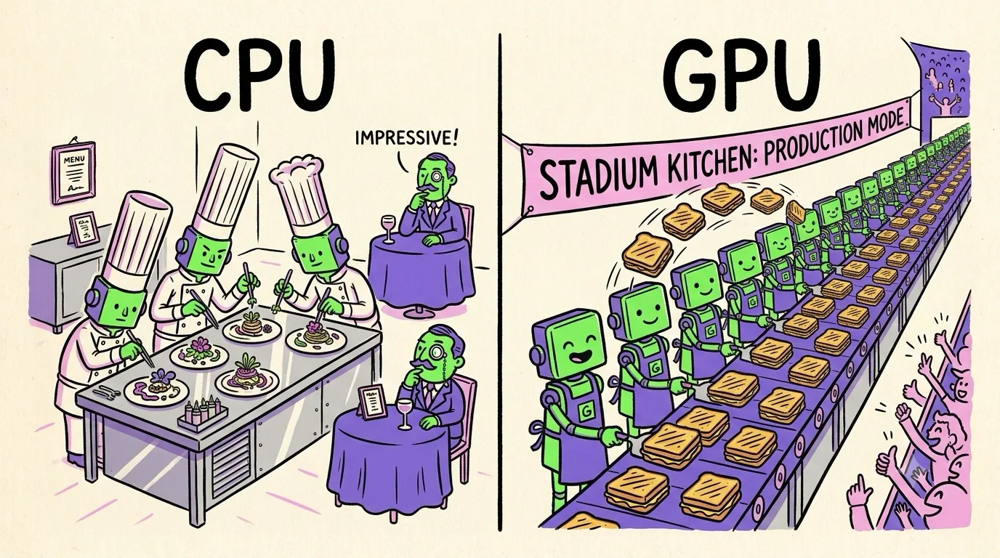

Chapter 02 · Two Philosophies
CPU vs GPU: Latency vs Throughput
Imagine two restaurants. The first has four world-class chefs. Any dish you order — no matter how complicated — arrives fast, because each chef is brilliant, has every tool within arm's reach, and can improvise mid-recipe. The second restaurant has two thousand line cooks. Each one knows how to do exactly one thing at a time, but when the order is "grilled cheese for a stadium," the two thousand cooks bury the four chefs. Same industry, opposite designs. That's CPU vs GPU.
A CPU is a latency machine: make one task finish as soon as possible. A GPU is a throughput machine: make a million tasks finish per second, even if each individual task is slow. Almost every design difference between them falls out of this one choice.
Where the silicon goes
A CPU core and a GPU core are built from the same transistors — the difference is what each design spends them on. A modern CPU core spends most of its silicon on machinery whose only job is to make one instruction stream fast:
- Branch prediction — guessing which way an
ifgoes before it's decided, so the pipeline never stalls. - Out-of-order execution — reshuffling your instructions on the fly to dodge delays.
- Huge caches — keeping data close so the core almost never waits for slow main memory.
A GPU rips almost all of that out. No fancy branch predictors, no out-of-order magic, small caches — and spends the freed-up silicon on more arithmetic units. Thousands of them. A high-end CPU has on the order of 16–64 cores; an NVIDIA RTX 5090 has 21,760 little cores, and a data-center H100 has 16,896.
An example you can feel
Say we need to brighten a 12-megapixel photo — add 10 to every pixel value. Roughly 36 million independent additions (3 color channels). On one CPU core, that's a loop chewing through them one after another (with some help from SIMD instructions, a CPU can do a handful per cycle). On a GPU, the picture is different: tens of thousands of pixels are being updated at the same instant, and the whole photo is done in well under a millisecond. This is why photo filters, video effects, and game graphics are all GPU territory.
Now flip the workload: parse a JSON file, where every character depends on what the previous one meant (are we inside a string? how deep are we nested?). There's no independence — step N needs step N−1's answer. Two thousand line cooks can't help; only one can hold the ladle. The four-chef CPU wins easily.
| Workload | Winner | Why |
|---|---|---|
| Brighten 36M pixels | GPU | Independent, identical operations |
| Matrix multiply (AI!) | GPU | Millions of independent multiply-adds |
| Parse JSON | CPU | Each step depends on the last |
| Run your OS & browser | CPU | Branchy, unpredictable, latency-sensitive |
| Physics for 1M particles | GPU | Same equations per particle |
| One database lookup | CPU | One task — nothing to parallelize |

A funny zine-style cartoon, hand-drawn ink with flat colors (electric green, violet, pink on cream paper), split into two halves. Left half labeled "CPU": a fancy tiny restaurant where four snooty gourmet chefs with tall hats each plate one elaborate dish with tweezers, a single customer looking impressed. Right half labeled "GPU": an absurdly long stadium kitchen with hundreds of identical smiling line cooks in green aprons all flipping the same grilled cheese sandwich in perfect sync, sandwiches flying out on a conveyor belt to a cheering crowd. Exaggerated, playful, no small unreadable text. Target size ~1280×720px, 16:9 landscape; composed for a small on-page figure, subject centred with safe margins — it is letterboxed into a 16:9 box, so keep nothing important near the edges.
Generate this with your image agent, then drop the file here.
The numbers, side by side
To make it concrete, here's a 2025-era flagship of each species. Don't memorize the numbers — notice the shape of the difference:
| CPU (desktop flagship) | GPU (RTX 5090) | |
|---|---|---|
| Cores | 16–24 big cores | 21,760 small cores |
| Clock speed | ~5–6 GHz | ~2.4 GHz |
| One thread's speed | Excellent | Poor |
| All-cores math throughput | ~1–2 TFLOPS | ~105 TFLOPS (FP32) |
| Memory bandwidth | ~100 GB/s | ~1,792 GB/s |
| Personality | Sprinter | Freight train |
Two things jump out. First, the GPU has roughly 50–100× the raw math throughput. Second — and this surprises everyone — it also has about 18× the memory bandwidth. Hold onto that second fact; by Chapter 8 you'll see that memory bandwidth, not math, is what actually limits modern AI.
"GPUs are faster than CPUs" is a broken sentence. Faster at what? A GPU running a single thread is like a freight train delivering one letter — slower than a kid on a bike. Speed only appears when you fill all the cargo cars. If someone benchmarks a GPU with tiny, serial work and declares it slow, they've measured the empty train.
Before reaching for a GPU, ask three questions: (1) Can I express the job as the same operation over lots of elements? (2) Are the elements independent (or nearly)? (3) Is there enough work to keep thousands of cores busy — think tens of thousands of elements minimum? Three yeses → GPU. Any no → stay on the CPU, and don't feel bad about it.
So a GPU is thousands of simple cores. But "thousands of cores" raises an obvious question: how do you organize thousands of cores so they don't trip over each other? That's the next chapter — and it contains the single most important word in GPU-land: the warp.
Sources NVIDIA CUDA C++ Programming Guide, "From Graphics Processing to General Purpose Parallel Computing" (docs.nvidia.com) · NVIDIA RTX 5090 specifications (nvidia.com) · Tom's Hardware GPU benchmarks hierarchy (tomshardware.com)